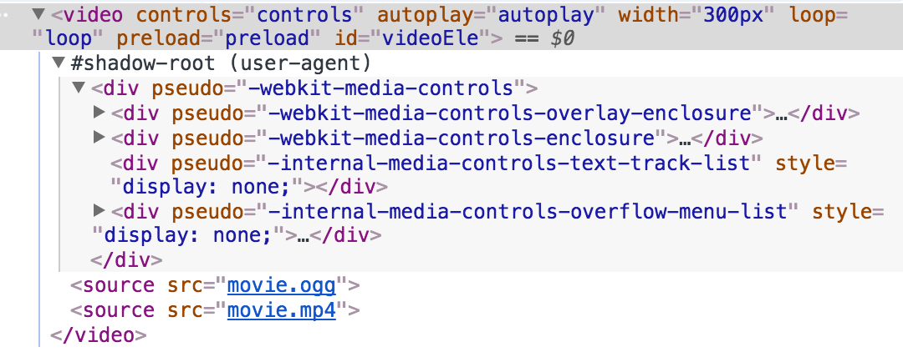
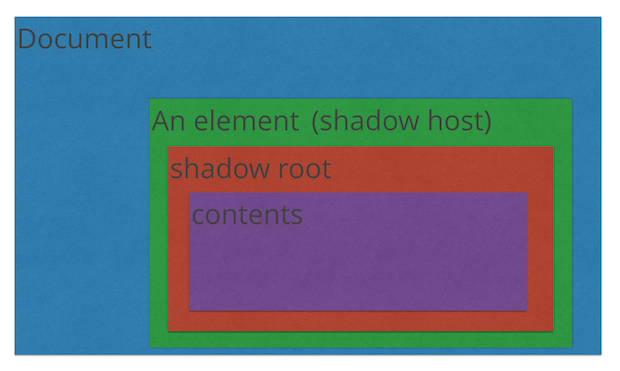

shadow dom
web页面脆弱性
由于HTML, CSS, JS的全局性作用域, 导致了web页面的脆弱性, 极容易引起变量冲突, 或局部作用域泄露到全局中引起混乱. 为修复该问题, 引入一些新的特性, 如HTML的类, id等属性. 但是依然有其缺陷, 不能完全解决该问题.
Shadow DOM机制的引入修复了该问题. Shadow DOM是一个有独立作用域的组件, 与外部的html/css内容隔离, 相互之间不会收到影响.
shadow dom 简介
Shadow DOM 对 Web Component 中的html和css封装在一起, 形成一个web组件. 如 video 标签会生成一个shadow dom, 用来设置其控件样式.
shadow dom 独立于document文档, 其样式属性不会泄露到外部, 外部的样式也不会影响到shadow dom, 可以方便的用来定义组件.

shadow-dom 在控制台中默认不展示, 可以通过 setting - preferences - Elements - Show user agent shadow DOM 显示 shadow dom
特征
- 隔离DOM: 组件的DOM是独立的, 与主document是隔离的. 通过document.querySelector()无法获取到shadow DOM中的节点
- CSS局部作用域: Shadow DOM内部定义的CSS样式在其局部作用域内, 不会泄露到全局页面中. 同时页面中的样式也不会渗入.
- 组合: 为组件设计一个声明性, 基于标记的API.
- 简化CSS: 局部作用域的CSS意味着可以使用简单的CSS选择器, 更通用的id/类名, 无需担心命名冲突.
- 效率: 页面可以分割为多个DOM模块, 而非一个大的页面, 提高组件的复用率.
shadow dom与普通dom的区别
浏览器将静态HTML文件解析为机器可以识别的数据模型(对象/节点), DOM是用来保存这些数据模型的树状数据结构, 同时保存了HTML的层次结构, 与静态HTML文件不同, 浏览器生产的DOM节点包含属性, 方法, 可以通过js来操作这些DOM对象.
shadow dom 与普通dom相同, 但有两点区别:
- 创建/使用的方式. shadow dom通常会附加至某个dom元素, 并建立一个作用域DOM树.
- 与页面其他部分有关的行为方式。 shadow dom中的css样式不会对其他部分产生影响.
css被全局样式影响的情况
一些可以继承的属性会突破边界影响到shadow dom内部 如 color, font-family, background, line-height等. 如果要避免其影响可以在shadow dom中重置这些样式.
选择符(*)会选择所有元素, 包括shadow dom的宿主标签, 修改其样式后, 可继承的样式会修改到shadow dom内部.
结构
- shadow host 宿主标签
- 根节点 #shadow-root
- contents 内容
shadow-dom 还可以进行嵌套

创建shadow dom
var box = document.querySelector('div');
// 创建shadow root, 或者用 Element.attachShadow()
var shadowRoot = box.createShadowRoot();
// 设置内容, style标签可以设置样式, 样式不会泄露到外面.
shadowRoot.innerHTML = '<style>p{color: red;}</style><p>我是影子dom</p>';
无法创建Shadow Dom的元素
有两类
- 本身已经有shadow DOM. 如 textarea, input, audio等
- shadow DOM没有意义. 如 img
自定义样式变量
通过CSS自定义属性来设置一些样式变量, 可以在组件外部修改组件内部的样式.
如shadow dom中
<style>
#panels{
/*使用一个样式变量, 该变量可以在组件外部定义*/
background: var(--panel-background-color, #fff);
}
</style>
<div id="panels"></div>
使用中, shadow dom外部
<style>
custom-element{
/*在组件外部设置该变量的值*/
--panel-background-color: skyblue;
}
</style>
slot 槽位
通过slot可以向组件内插入内容. slot是插槽. 通过将light DOM与actual DOM结合的方式来插入内容.
如light DOM, 组件外部调用的地方插入的元素. 在渲染的时候会把light DOM渲染到actual DOM的位置
<custom-picture>
<!--Light DOM <img> saying it should be put into the "profile-picture" slot-->
<img src="assets/user.svg" slot="profile-picture">
</custom-picture>
组件定义
生成的DOM结构
<custom-picture>
^^^^^^^^^^^^^^^^^^^^^^^^^^^^^^^^^^^^^^^^^
#shadow-root
<slot name="profile-picture">
<!--The <img> from the light DOM gets rendered here!真实的DOM渲染的位置-->
</slot>
_________________________________________
消息传递
在shadowDOM中通过dispatchEvent来发送一个自定义的消息. 可以在shadowDOM外部监听到. 通过修改元素的属性可以传递消息内容. shadowDOM外部的click等事件可以传递到内部.
this.tabs[idx].dispatchEvent(new Event('tab-select', {composed: true, idx: idx, bubbles: true, cancelable: false}));
``
## open/close 模式
shadow DOM 的一种情况称为“闭合”模式。创建闭合影子树后，在 JavaScript 外部无法访问组件的内部 DOM。这与 <video> 等原生元素工作方式类似。JavaScript 无法访问 <video> 的 shadow DOM，因为浏览器使用闭合模式的影子根来实现。
例如 - 创建一个闭合的影子树：
const div = document.createElement('div'); const shadowRoot = div.attachShadow({mode: 'closed'}); // close shadow tree // div.shadowRoot === null // shadowRoot.host === div
其他 API 也会受到闭合模式的影响：
Element.assignedSlot / TextNode.assignedSlot 返回 null
Event.composedPath()，用于与 shadow DOM 内部元素关联的事件，返回 []
注：闭合的影子树不是非常有用。有些开发者将闭合模式视为一项人工安全功能。 但是让我们澄清一点，它并不是一项安全功能。 闭合模式只是简单地阻止外部 JS 深入到元素的内部 DOM。
任何时候都不要使用 {mode: 'closed'} 来创建网络组件，以下是我总结的几点原因：
人为的安全功能。没有什么能够阻止攻击者入侵 Element.prototype.attachShadow。
闭合模式阻止自定义元素代码访问其自己的 shadow DOM。 这根本没用。相反，如果您想要使用如 querySelector() 等元素，您必须存放影子根以备日后参考。 这就与闭合模式的最初目的完全背道而驰！
customElements.define('x-element', class extends HTMLElement { constructor() { super(); // always call super() first in the ctor. this._shadowRoot = this.attachShadow({mode: 'closed'}); this._shadowRoot.innerHTML = '
'; } connectedCallback() { // When creating closed shadow trees, you'll need to stash the shadow root // for later if you want to use it again. Kinda pointless. const wrapper = this._shadowRoot.querySelector('.wrapper'); } ... }); ``` 闭合模式使组件对最终用户的灵活性大为降低。在构建网络组件时，您有时可能会忘记添加某项功能、某个配置选项以及用户所需的用例。一个很常见的例子是忘记为内部节点添加足够的样式钩子。在闭合模式下，用户无法替换默认值并调整样式。 如果能访问组件的内容，这将超级有用。最终，如果用户得不到他们想要的，他们就会舍弃您的组件，寻找其他组件或创建自己的组件:(